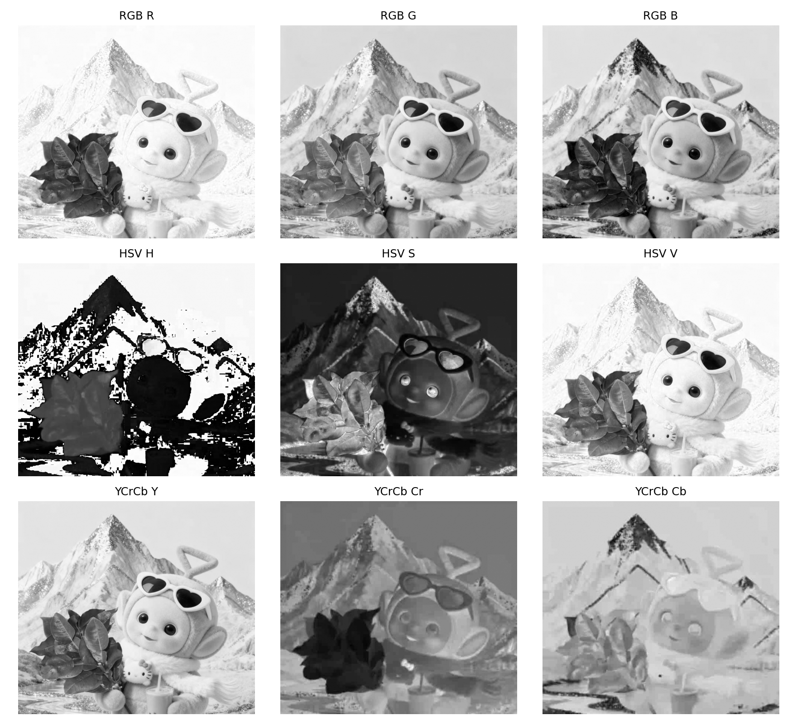
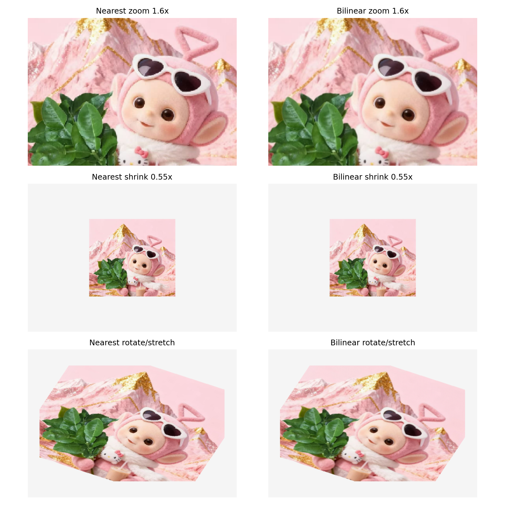
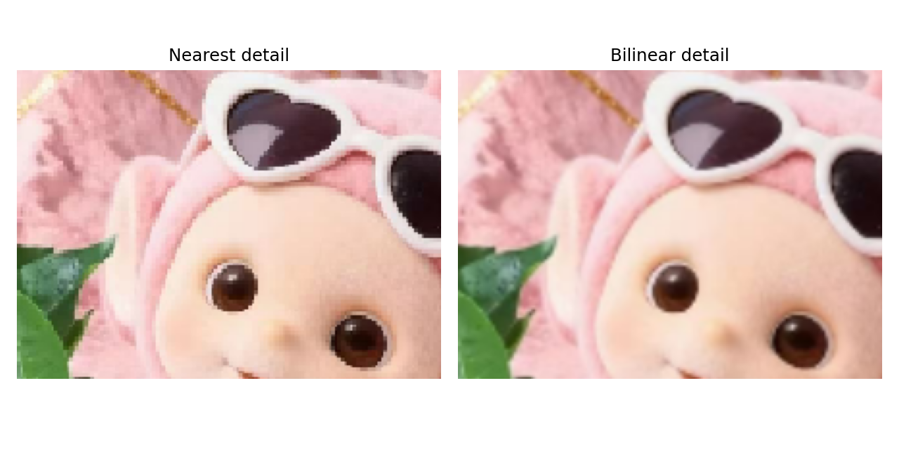

图像颜色空间与图像插值实验报告
Vibe Coding 图像处理实验：颜色空间通道拆分、HSV 手写转换、最近邻插值、双线性插值与 Streamlit 云端部署。
一、作业内容
本次作业要求使用基于 LLM 的 Vibe Coding 方式，完成图像颜色空间与图像插值实验。实验需要输入图像，输出 RGB、HSV 等颜色空间中每个通道的图像，并实现最近邻插值和双线性插值，支持放大、缩小、旋转拉伸等图像操作。
二、训练 / 生成 Prompt
Vibe Coding Prompt（纯文本） 请使用 Python、OpenCV、NumPy 实现一个“图像颜色空间与图像插值”的课程实验项目。要求： 1. 输入一张图片，读取后转为 RGB 格式。 2. 实现并输出不同颜色空间的通道图像，包括 RGB 三通道、HSV 三通道，并扩展输出 YCrCb、Lab 等常用颜色空间通道。 3. HSV 转换需要给出可读的核心算法实现，不能只调用 cv2.cvtColor；OpenCV 可以用于图像读写、辅助颜色空间转换和保存结果。 4. 实现图像插值算法： - 最近邻插值 - 双线性插值 5. 插值操作需要支持图像放大、缩小、旋转拉伸等变换，并分别输出最近邻和双线性插值结果。 6. 自动生成测试截图或拼图，便于放入实验报告。 7. 输出内容包括： - 核心算法 Python 源码 - 测试结果截图 - 作业小结 - 运行方式说明 实现时请保持代码结构清晰，函数命名直观，并在关键算法处添加少量注释。报告语言使用中文，说明实验原理、运行结果与个人总结。
三、实验流程
- 使用 OpenCV 读取输入图片，并将 BGR 顺序转换为 RGB 顺序。
- 拆分 RGB 三个通道，保存红、绿、蓝通道图像。
- 根据 RGB 到 HSV 的数学公式，手写实现 HSV 转换，并输出 H、S、V 通道。
- 使用 OpenCV 辅助输出 YCrCb 和 Lab 颜色空间通道，作为扩展对比。
- 实现最近邻插值和双线性插值，分别完成图像放大、缩小、旋转拉伸。
- 自动生成结果截图拼图，用于报告展示。
- 用 Streamlit 封装为网页应用，上传 GitHub 后部署到 Streamlit Community Cloud。
四、网站功能与结果截图
在线网站 URL：https://zhousizuoyeafirst.streamlit.app/。网页支持上传图片、查看颜色空间通道，并通过侧边栏参数控制图像缩放、旋转和拉伸。



五、核心算法说明
1. 手写 HSV 转换
HSV 转换中，先将 RGB 数值从 0-255 归一化到 0-1。对每个像素计算三个通道中的最大值、最小值和差值，再根据最大通道属于 R、G、B 中的哪一个来计算色相 H。饱和度 S 使用差值除以最大值，明度 V 直接取最大值。最后将 H、S、V 映射回图像可保存的数值范围。
2. 最近邻插值
最近邻插值采用反向映射思想。遍历目标图像的每个像素，计算它在原图中的对应坐标，然后选择距离该坐标最近的原图像素作为结果。该方法速度快，但放大图像时容易出现块状感。
3. 双线性插值
双线性插值同样采用反向映射，但它不会只取一个最近像素，而是取源坐标周围四个像素，根据横向和纵向距离进行加权平均。它的结果更加平滑，适合图像缩放和几何变换。
六、Streamlit 部署说明
本实验的网页入口文件是 streamlit_app.py，依赖文件是 requirements.txt。将代码上传到 GitHub 后，在 Streamlit Community Cloud 中选择对应仓库、分支，并填写入口文件路径即可部署。
如果仓库根目录就是本实验文件，入口文件填写：
streamlit_app.py
如果仓库根目录下还有一层 a1 文件夹，入口文件填写：
a1/streamlit_app.py
部署完成后得到的公网 URL 为：
https://zhousizuoyeafirst.streamlit.app/
七、作业小结
本次实验使用 Codex 作为 Vibe Coding Agent，围绕图像颜色空间与图像插值完成了一个完整的小型图像处理项目。通过实验，我理解了 RGB、HSV、YCrCb、Lab 等颜色空间的差异，也通过手写 HSV 转换进一步理解了颜色空间转换的数学过程。
在图像插值部分，最近邻插值实现简单、速度较快，但结果边缘较硬；双线性插值通过四邻域加权平均得到更平滑的视觉效果。旋转拉伸等几何变换中使用反向映射，可以避免目标图像出现明显空洞。
工程实现方面，Streamlit 可以快速将 Python 图像处理算法封装成网页应用。通过 GitHub 与 Streamlit Community Cloud 部署后，实验结果可以通过公网 URL 访问，便于展示和提交。